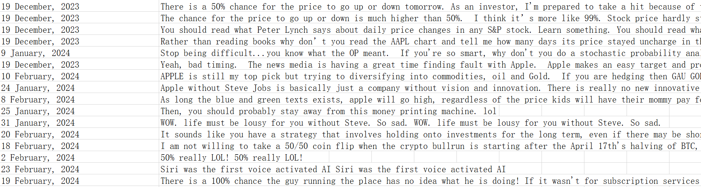

The conversation page of Yahoo Finance provides a platform for investors to share their opinions and insights about stocks and other financial instruments. It is a community-driven forum where users can ask questions, share their experiences and learn from other investors.
In this blog, we aim to crawl the comment data by using Selenium library to simulate browser actions and using the Chrome browser driver for automation.
Import libraries
from selenium import webdriver
from selenium.webdriver.chrome.service import Service
from selenium.webdriver.common.by import By
from selenium.webdriver.support.ui import WebDriverWait
from selenium.webdriver.support import expected_conditions as EC
from selenium.webdriver.common.action_chains import ActionChains
from selenium.webdriver.chrome.options import Options
from openpyxl import Workbook
import time
Initialize the browser driver
In this step, we use openpyxl library to create a new Excel to store the comment data. By adding several option arguments to the Chrome browser driver, we can ignore SSL errors and certificate errors.
In order to avoid data missing, we set a time sleep function of 10 seconds to make sure that the page is fully loaded.
# intialize Excel
wb = Workbook()
ws = wb.active
ws.title = "running"
options = Options()
options.add_argument('--ignore-ssl-errors=yes')
options.add_argument('--ignore-certificate-errors')
chrome_driver_path = ".\chromedriver-win64\chromedriver.exe"
service = Service(executable_path=chrome_driver_path)
service.log_path = 'NUL'
service.verbose = False
driver = webdriver.Chrome(service=service, options=options)
# driver = webdriver.Chrome('./chromedriver-win64/chromedriver.exe')
driver.get(web)
time.sleep(10)
Automate browser action to "Show More Comments"
We firstly locate the iframe element which contains the comments in the webpage and then locate the comment list and the “Show More Comments” button in the iframe. By using shadow DOM and list elements, we can easily traverse and extract all comment data.
To avoid getting only part of the comments that were initially displayed, we dynamically load more comments by simulating to click the button until the specified maximum number of attempts is reached or there are no more comments to load.
outerBond = driver.find_element(By.ID,'spotIm-conversations-module-wrapper')
iframe = outerBond.find_element(By.TAG_NAME,'iframe')
driver.switch_to.frame(iframe)
# spotim_specific = driver.find_element(By.ID, 'spotim-specific')
host_parent = driver.find_element(By.CSS_SELECTOR, '[data-spot-im-module-default-area="conversation"]')
shadow_host = host_parent.find_element(By.CSS_SELECTOR, "div:first-child")
shadow_root = driver.execute_script('return arguments[0].shadowRoot', shadow_host)
spcv_messages_list = shadow_root.find_element(By.CLASS_NAME,'spcv_messages-list')
list_items = spcv_messages_list.find_elements(By.TAG_NAME, 'li')
load_message_parent = shadow_root.find_element(By.CLASS_NAME,'spcv_loadMoreCommentsContainer')
Here we use the While loop and counters to control the number of attempts to load comments, the followings are the benefits:
a. Prevent too many loops: we use a loop to click the "Show more comments" button, but set a limit on the maximum number of attempts to prevent infinite loops, thus avoiding the situation where the code gets stuck in an endless loop.
b. Fault tolerant processing: we use the try-except statement to deal with the exception case that the element cannot be found, so as to exit the loop in time when the button cannot be found, and output the corresponding prompt message.
counter = 0
while counter < max_attempts:
try:
more_replies_button = load_message_parent.find_element(By.CSS_SELECTOR, "button[data-spot-im-class='load-more-messages']")
driver.execute_script("arguments[0].click();", more_replies_button)
time.sleep(10)
counter += 1
except:
print("loading completed")
break
Iterate all the comments and write to Excel
We iterate through all the comments, and for each comment we do the follwing works:
a. Keep trying to click the "Show more replies" button until there are no more replies to expand.
b. Extract the text and date from the comment.
c. Save the extracted text and date in the corresponding row of the Excel worksheet.
Finally we derive an Excel file which contains all the scraped comments.
row = 1
for li in list_items:#tqdm(list_items, desc="Processing messages")
try:
while True:
try:
more_replies_button = li.find_element(By.CSS_SELECTOR, "button[aria-label='Show more replies']")
driver.execute_script("arguments[0].click();", more_replies_button)
time.sleep(10)
print("open a fold")
except:
print("nothing remained")
break
time.sleep(10)
all_message_views = li.find_elements(By.CLASS_NAME, 'components-MessageLayout-index__message-view')
for main_parent in all_message_views:
text_elements = main_parent.find_elements(By.CSS_SELECTOR, 'p, div[data-spot-im-class="message-text"]')
combined_text = ' '
for element in text_elements:
if element.tag_name == 'p' or (element.get_attribute('data-edited-text') and element.get_attribute('data-edited-text') == "(Edited)"):
combined_text += element.text + " "
if not combined_text:
div_elements = main_parent.find_elements(By.CSS_SELECTOR, 'div[data-spot-im-class="message-text"][data-edited-text="(Edited)"]')
combined_text = ' '.join([div.text for div in div_elements])
main_date = main_parent.find_element(By.TAG_NAME, 'time').text
ws[f'A{row}'] = main_date
ws[f'B{row}'] = combined_text.strip()
row += 1
wb.save("commentsdata.xlsx")
print("document is saved",row,"row data")
except Exception as e:
print("li error", e)
wb.save("commentsdata.xlsx")
print("your final data is saved as excel")
Now the data we need is saved in the excel file, the format is as follows:

About Selenium
Selenium is a powerful, flexible and easy-to-use library for a variety of web automation and data scraping scenarios, providing a wealth of features and tools to help developers more efficiently manipulate and control the browser and get the data they need.
Browser automation
Selenium allows users to simulate the operation in the browser, which can automatically open web pages, click buttons, fill in forms, etc., so as to achieve automated web access and interaction.
driver = webdriver.Chrome(service=service, options=options)
# driver = webdriver.Chrome('./chromedriver-win64/chromedriver.exe')
driver.get(web)
or
driver.execute_script("arguments[0].click();", more_replies_button)
Powerful element positioning capabilities
Selenium provides a variety of element positioning methods, such as ID, CSS selector, tag name, class name etc., to accurately locate and operate elements in web pages, facilitating data capture and interaction.
outerBond = driver.find_element(By.ID,'spotIm-conversations-module-wrapper')
iframe = outerBond.find_element(By.TAG_NAME,'iframe')
shadow_host = host_parent.find_element(By.CSS_SELECTOR, "div:first-child")
spcv_messages_list = shadow_root.find_element(By.CLASS_NAME,'spcv_messages-list')
Handling JavaScript rendering
Selenium can wait for the page to be fully loaded and rendered before proceeding to ensure that the full page content and dynamically generated data are obtained. This avoids the problem of element positioning errors or missing data because the page is not fully loaded.
time.sleep(10)
Specially, the use of Selenium allows the scraper to interact with dynamic web elements, such as loading more comments and expanding replies, which might not be possible with traditional scraping libraries like Beautiful Soup or Scrapy. This makes it more effective in obtaining a larger number of comments from the discussion pages.
Further Improvements
Some possible improvements or extensions to the program could include:
a. Adding error handling and retry mechanisms to handle network issues or temporary failures, making the scraper more robust and reliable.
b. Implementing pagination to navigate through multiple pages of comments, allowing the scraper to collect even more data.
c. Providing options for the user to filter or sort the comments based on certain criteria, such as date, popularity, or content.
d. Adapting the scraper to work with other websites or platforms, making it more versatile and useful for different purposes.
Conclusion
In summary, this code is a web scraper program that scrapes comments from Yahoo Finance stock discussion pages and saves them to an Excel file. With further enhancements, it can become an even more powerful tool for users interested in analyzing market sentiment and gathering insights from investor discussions.